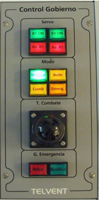

El módulo de Control de Gobierno permite a operador encender y apagar las bombas de los servos, seleccionar el modo de gobierno, y realizar gobierno de combate o emergencia.

Contiene los siguientes elementos:
Servo
- Pulsadores de Marcha / Parada de las dos bombas del servo (B1 ON / B2 ON): conmuta el estado de marcha o parada de la bomba correspondiente.
- Indicadores de Avería de las Bombas y Pulsadores de Aceptación (Av B1/Av B2): cuando el instructor introduce una avería en una bomba, el indicador correspondiente se enciende de forma intermitente. Cuando el operador lo presiona (reconociendo la avería), el indicador se ilumina de forma fija, y finalmente se apaga cuando el instructor elimina la condición de avería.
Modo de Gobierno
- ·Pulsador de selección de gobierno mediante Piloto Automático: cuando es pulsado, activa gobierno mediante Piloto Automático, y permanece iluminado mientras está activo este modo de gobierno.
- Pulsador de selección de gobierno Manual: cuando es pulsado, activa gobierno manual (mediante Rueda de Gobierno), y permanece iluminado mientras está activo este modo de gobierno.
- Pulsador de selección de gobierno mediante Timón de Combate: cuando es pulsado, activa gobierno mediante Timón de Combate, y permanece iluminado mientras está activo este modo de gobierno.
- Pulsador de selección de gobierno de Emergencia: cuando es pulsado, activa gobierno de Emergencia, y permanece iluminado mientras está activo este modo de gobierno.
Los cuatro pulsadores anteriores son excluyentes entre ellos y la selección por defecto es gobierno Manual.
Timón de Combate
- Palanca de Timón de Combate: si está activado el modo de gobierno mediante Timón de Combate, realiza un control del timón en modo velocidad. Es decir, solicita movimiento del timón con velocidad proporcional al desplazamiento de la palanca. Este control consiste en una palanca con movimiento hacia derecha e izquierda, que retorna a la posición central al dejarlo libre.
Gobierno de Emergencia
- Pulsadores para Gobierno de Emergencia (Babor / Estribor): si está activado el modo de gobierno de Emergencia, por cada pulsación, se mueve 1º el timón en el sentido correspondiente.